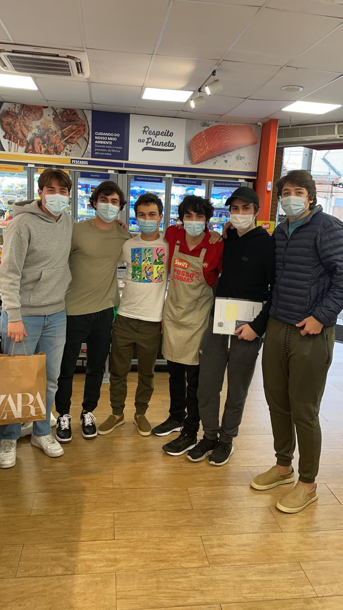
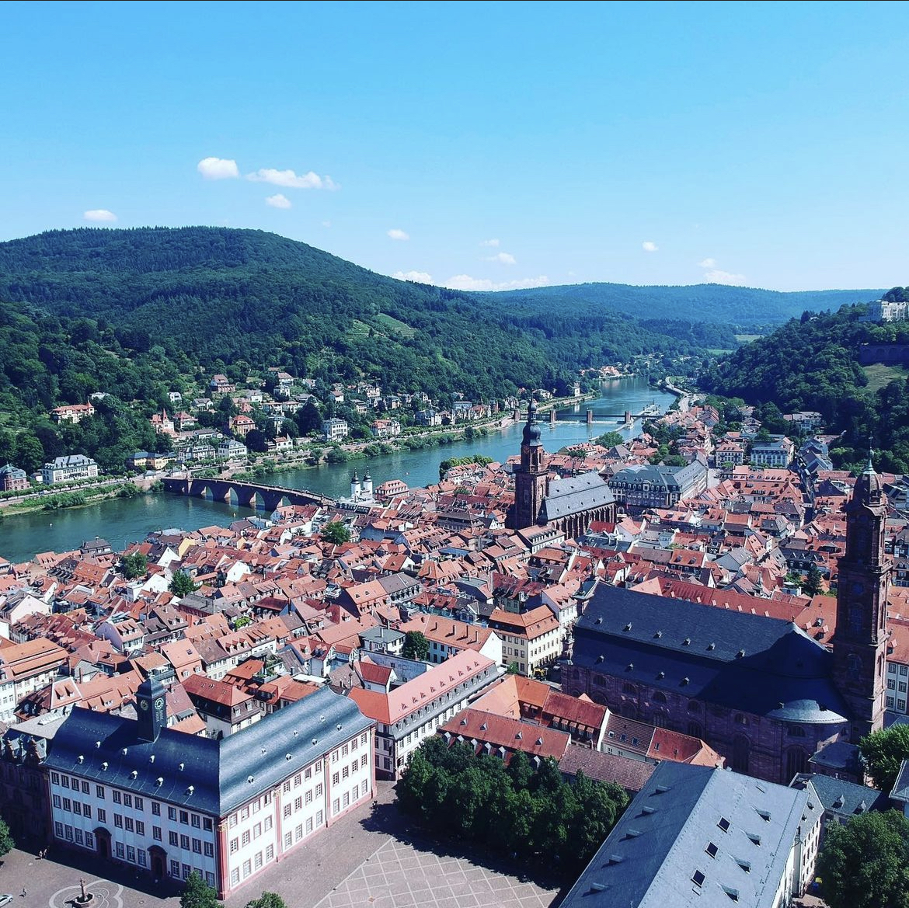
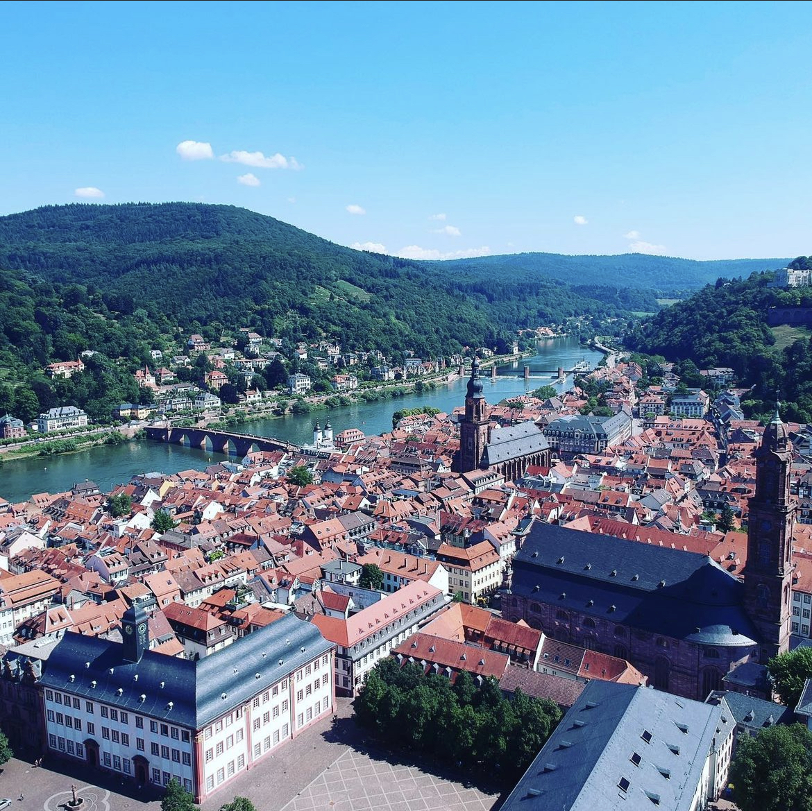
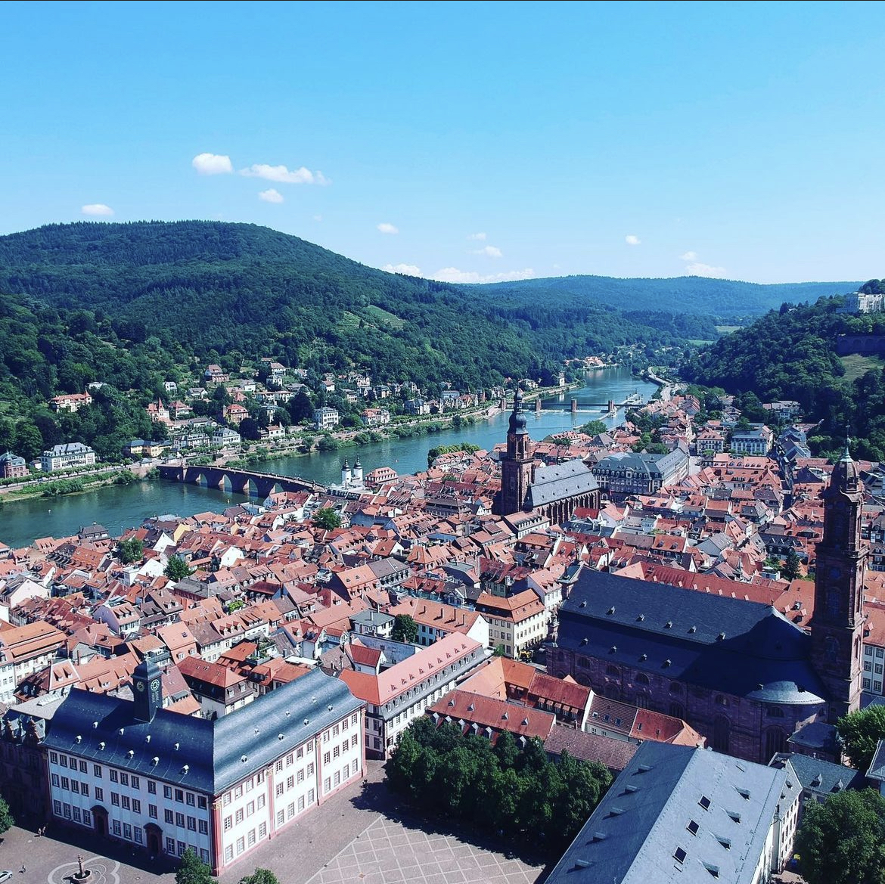

Luiz Felipe Barbosa
Luiz Felipe Pratini de Moraes Barbosa is a dedicated and versatile individual with a strong academic background in both humanities and sciences, currently pursuing an undeclared program in the College of Humanities Arts and Social Sciences at the University of California, Riverside. With bilingual proficiency in English and Portuguese, along with experience in data analysis and Python programming, Luiz has demonstrated the ability to adapt and excel in diverse environments.
His academic achievements include his investigation into machine learning translation algorithms and his study on the alt-right movement, showcasing strong research and analytical abilities. Luiz's extensive involvement in various activities such as chess, filmmaking, and water polo, reveal his passion for personal growth and commitment to community engagement.
With experience interning at a meat retail store and volunteering at Amigos do Bem, Luiz has honed his communication and interpersonal skills. He has participated in multiple enrichment and leadership programs, including Model United Nations, World Challenge, and the University of São Paulo Art and Artificial Intelligence program, further emphasizing his dedication to personal and professional development.
Having earned numerous awards and accolades, such as the Duke of Edinburgh's awards and the United Kingdom Mathematics Trust competition, Luiz proves himself to be a well-rounded and motivated individual poised for success in his future endeavors.
Internships and Work Experience
Cashier and Clerk
Served as a cashier and clerk, assisting customers with product inquiries, shopping list planning, and introducing new items tailored to their interests.
Volunteer
Assisted the NGO, in 2015, distributing basic food parcels and toys during Christmas in Sertão Nordestino (state of Pernambuco, Brazil). Volunteered at the São Paulo distribution center during 2016 - 2020, helping with spreadsheet organization, clothes sorting, and product management.
Enrichment and Leadership
Chess Club leader
Coordinated and supervised chess games, provided instruction on chess strategies, and oversaw internal and school-wide tournaments featuring numerous awards. Endeavored to promote a growing enthusiasm for chess within the student community.
Bow Seat Ocean Awareness Contest
Collaborated with a team to create a short film highlighting the impact of water on diverse socioeconomic groups in Brazil. Contributed to location scouting and filming in São Paulo, capturing scenes at a country club's lake and polluted river shoreline, detailing the socioeconomic difference in accessing water.
University of São Paulo Art and Artificial Intelligence program
Collaborated with a team to create a short film highlighting the impact of water on diverse socioeconomic groups in Brazil. Contributed to location scouting and filming in São Paulo, capturing scenes at a country club's lake and polluted river shoreline, detailing the socioeconomic difference in accessing water.
World Challenge
Collaborated on fundraising initiatives, including games and raffles, to secure $10,000 for a service trip to Zambia. Contributed to a house-building project in Zambia, gaining hands-on experience in construction techniques and teamwork. Helped manage trip funds, accommodations, and activities during the trekking portion of the challenge.
Model United Nations (MUN) Delegate
Participated in multiple MUN conferences, including POSMUN 2018, BRAMUN 2018, AASB MUN 2019, and CRAIGMUN 2020. Conducted research and developed persuasive arguments on various global issues, representing diverse perspectives and nations.
Water Polo Esporte Clube Pinheiros
Served as a goalie for a competitive water polo team, participating in local and interstate competitions. Engaged in intensive daily training sessions and a 2019 trip to Barcelona for practice and competition against local teams.
Education
University of California Riverside
Portfolio


 



